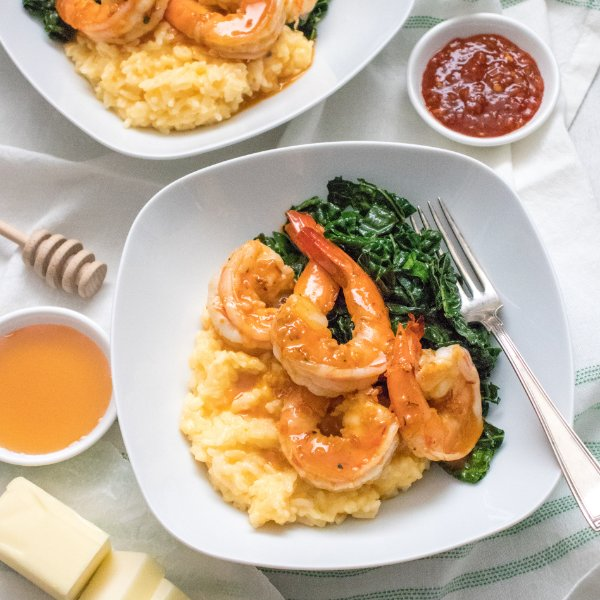

Spicy Honey Butter Shrimp with Sautéed Kale & Creamy Cheddar Rice

Total Time
35 min
Nutrition (Per Serving)
674.8 kcalCalories
40.1 gProtein
61.3 gCarbs
30.3 gFat
Full nutrition table
| Calories | 674.8 kcal |
| Total fat | 30.3 g |
| Saturated fat | 17.3 g |
| Trans fat | 1.1 g |
| Cholesterol | 290.6 mg |
| Sodium | 1239.4 mg |
| Carbohydrates | 61.3 g |
| Fiber | 2.7 g |
| Sugars | 13.8 g |
| Protein | 40.1 g |
| Potassium | 822.1 mg |
| Calcium | 484.2 mg |
| Iron | 4.1 mg |
| Vitamin A | 748.5 IU |
| Vitamin C | 97.2 mg |
| Vitamin D | 52.8 IU |
Cookware
Ingredients
- 1 cupbasmati rice
- ½ (8 oz) blockcheddar cheese
- 12 fl ozchicken or vegetable broth
- 2 buncheskale
- 1 ½ lbraw peeled shrimp, fresh or frozen
- 8 fl ozwhole milk
- black pepper
- butter, unsalted
- chili-garlic sauce
- honey
- salt
Steps
- Using a strainer or colander, rinse the rice under cold, running water, then drain and transfer to a medium saucepan. Add broth and milk; bring the mixture to a simmer over medium-high heat.1 cup basmati rice
12 fl oz (1 ½ cups) chicken or vegetable broth
8 fl oz (1 cup) whole milk - Meanwhile, coarsely grate cheese, transfer to a small bowl, and set aside.½ (8 oz) block cheddar cheese
- Once the liquid comes to a simmer, stir the mixture, cover the saucepan, and reduce heat to low. Cook until liquid is partially absorbed and the rice is tender, 15-18 minutes.
- Meanwhile, wash and dry kale. Fold leaves in half lengthwise and slice off the stems. Chop or tear leaves into bite-sized pieces and set aside.2 bunches kale
- If using frozen shrimp, place them in a colander and run under cold water to thaw them slightly and remove any ice crystals. (If using fresh shrimp, skip this step.) Place the shrimp on a clean towel or paper towels and pat dry.1 ½ lb raw peeled shrimp, fresh or frozen
- Preheat a large skillet over medium heat.
- Once the skillet is hot, add butter, honey, and chili-garlic sauce; whisk to combine.¼ cup butter, unsalted
2 tbsp honey
2 tbsp chili-garlic sauce - Working in batches if necessary, add shrimp to the skillet and cook until opaque, 1-2 minutes per side. Once done, transfer shrimp and butter sauce to a medium bowl; cover with foil.
- When the rice is tender, with some liquid remaining, add the cheese and stir to combine. Remove from the heat and let stand, covered, for 5 minutes.
- Return the skillet to medium-high heat, add more butter, and swirl to coat the bottom.4 tsp butter, unsalted
- Add kale to the skillet in handfuls, waiting for the kale to wilt slightly before adding the next handful. Season with salt and pepper; cook, stirring often, until soft, 4-5 minutes.½ tsp salt
⅛ tsp black pepper - To serve, divide rice, kale, and shrimp between bowls. Drizzle with honey butter and enjoy!